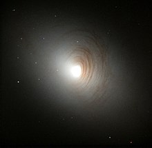

Las galaxias lenticulares constituyen un grupo de transición entre las galaxias elípticas y las espirales, y se dividen en tres subgrupos: SO1, SO2 y SO3. Poseen un disco, una condensación central muy importante y una envoltura extensa.
Incluyen las lenticulares barradas (SBO), que comprenden tres grupos: en el primero (SBO-1), la barra es ancha y difusa; en el segundo (SBO-2) es más luminosa en las extremidades que en el centro; y en el tercero (SBO-3) es ya muy brillante y bien definidas.
